Contents
aws-analyzer · s3.py
Explore your S3 data from a SageMaker notebook
One Python file. Drop it next to your notebook and get readable reports on your buckets: what's in them, what they cost, who can read them, and what's inside the files, without leaving Jupyter.
- One file, boto3 only
- Read-only: never changes your data
- Works on billion-object buckets
- Plain text outside Jupyter
Every example uses a bucket called acme-ml-data; use your own bucket names. The screenshots are real output from the tool, run against a demo bucket with synthetic data.
Set up in SageMaker
-
Get
s3.pynext to your notebook. Pick whichever works in your environment:- Upload it. Download s3.py, then drag it into JupyterLab's file browser, in the same folder as your notebook.
- Fetch it from a cell, if the notebook can reach the internet:
!curl -sO https://raw.githubusercontent.com/utkarsh5026/aws-analyzer/main/analyzers/s3.py - Copy it from S3, for a notebook with no internet access (VPC-only mode). Upload it to a bucket once, then:
!aws s3 cp s3://acme-ml-data/tools/s3.py . - Or paste the whole file into a notebook cell and run it.
-
Import it and create the view. It uses the notebook's IAM execution role, so there's nothing to configure.
from s3 import S3View ui = S3View() # uses the notebook's IAM role ui.help() # every command with a one-line description -
Optional: another AWS profile or region, plain-text output, or longer tables:
from s3 import S3Analyzer, S3View ui = S3View(S3Analyzer(profile="dev", region="eu-west-1")) ui = S3View(mode="text") # plain text, e.g. in a terminal or a script ui = S3View(max_rows=0) # show every row of long tables (default: 50)
Only boto3 is required. pandas, pyarrow and numpy (all preinstalled on SageMaker) are used for tables. A few file types need an extra package; the preview tells you which one when it's missing:
%pip install openpyxl pypdf zstandard python-snappy # Excel, PDF text, .zst before Python 3.14, snappy AvroFive-minute tour
The commands you'll use most. Each one prints a report under the cell; none of them change anything.
ui.overview() # every bucket: size, monthly cost, warnings
ui.bucket_info("acme-ml-data") # settings, policy, risks, size by storage class
ui.summary("s3://acme-ml-data/curated/") # what's in a folder, and what it costs
ui.find("s3://acme-ml-data/", extensions="parquet", min_size="100MB")
ui.preview("s3://acme-ml-data/curated/features/churn/train.parquet")
df = ui.core.read_df("s3://acme-ml-data/curated/features/churn/train.parquet") # a pandas DataFrameAnywhere a location is expected you can write s3://bucket/prefix or just bucket/prefix. Sizes accept 1024, "10MB" or "1.5GB". Times accept a datetime, "2025-05-01", or an age such as "7d", "12h" or "2w" (meaning that long ago).
Your buckets
Every bucket at a glance
overview() checks every bucket in parallel: size and object count (from CloudWatch, so it's instant even for huge buckets), estimated monthly cost, versioning, encryption, public access, lifecycle rules, and a list of warnings.
ui.buckets() # just names, regions and creation dates (fast)
ui.overview() # every bucket in one table
ui.overview("sagemaker-*") # only buckets whose name matches
ui.overview(metrics=False) # skip CloudWatch: faster, but no sizes or costs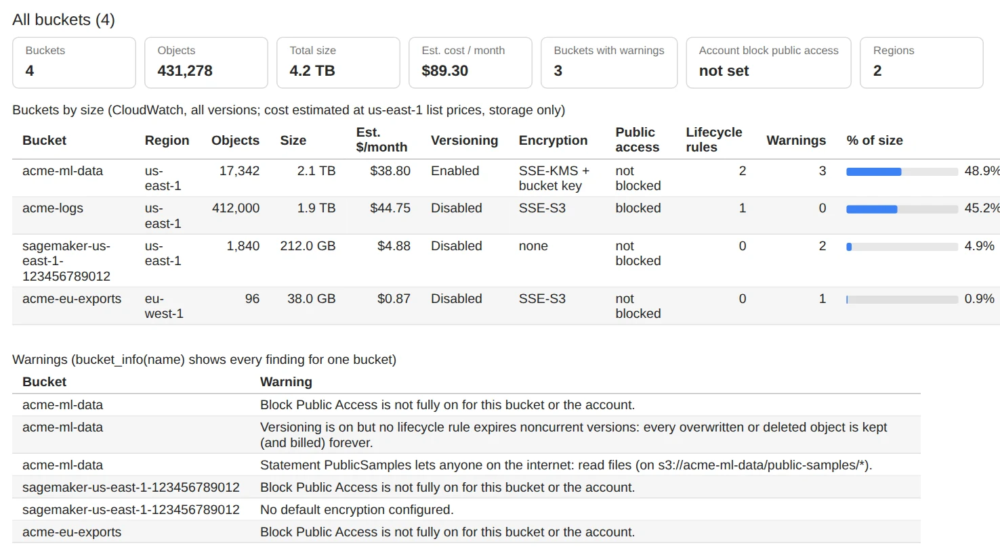
ui.overview(): sizes and costs cover all versions, from CloudWatch's daily storage metrics.One bucket in detail
bucket_info() shows the bucket's settings and flags anything risky or wasteful: Block Public Access off, no default encryption, versioning without a rule that cleans up old versions, and so on. It also explains the lifecycle rules and the bucket policy in plain English, and prices each storage type.
ui.bucket_info("acme-ml-data")
ui.bucket_info("s3://acme-ml-data/any/path") # a full S3 path works too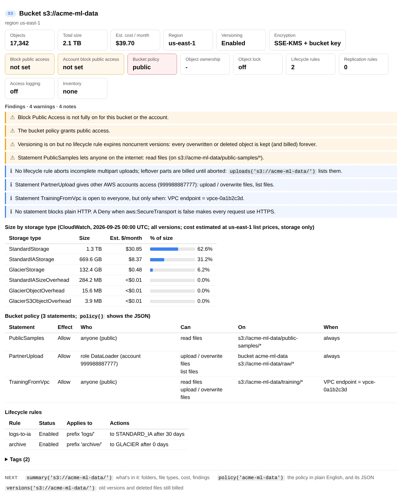
ui.bucket_info("acme-ml-data")Who can access a bucket
policy() turns the bucket policy into a table of who can do what, on which files, and under which conditions. It flags statements open to the whole internet, access from other AWS accounts, and whether plain HTTP is allowed. The raw JSON is shown underneath.
ui.policy("acme-ml-data")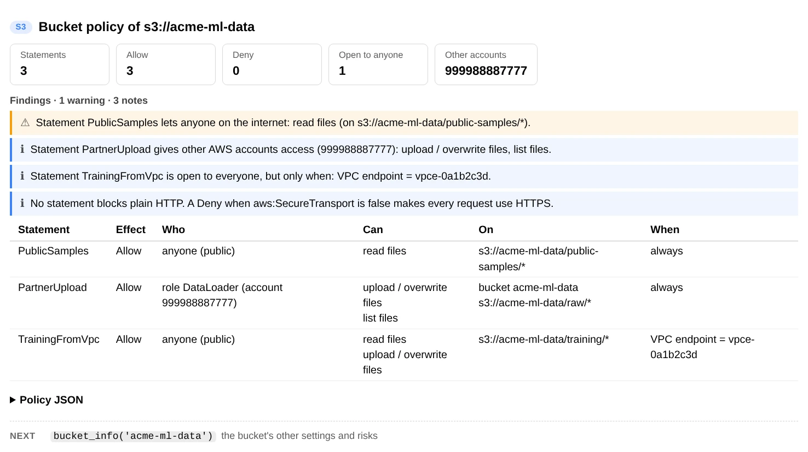
ui.policy("acme-ml-data")Browse and search
Folders
ui.ls("s3://acme-ml-data/") # one level, like `aws s3 ls` (fast anywhere)
ui.ls("s3://acme-ml-data/training") # 'training' is read as the folder 'training/'
ui.tree("s3://acme-ml-data/curated/", depth=3) # size and object count at every level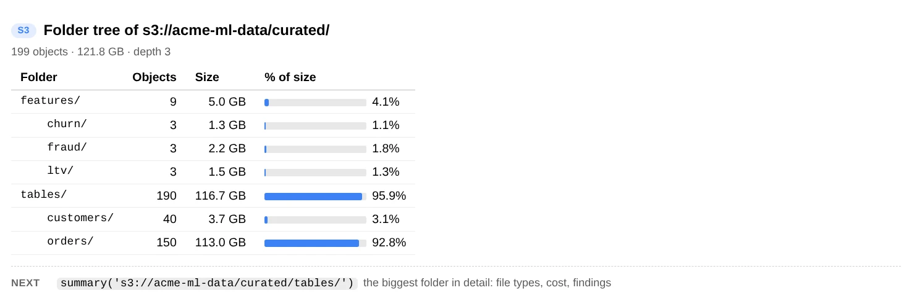
ui.tree("s3://acme-ml-data/curated/", depth=3)Find files
Combine any filters; a file has to match all of them.
ui.find("s3://acme-ml-data/training/", pattern="*.tar.gz", min_size="4GB", modified_after="90d")
ui.find("s3://acme-ml-data/raw/", regex=r"dt=2025-0[1-3]-\d\d/", extensions=["json", "csv"])
ui.find("s3://acme-ml-data/archive/", storage_classes="GLACIER", limit=None) # no cap on matches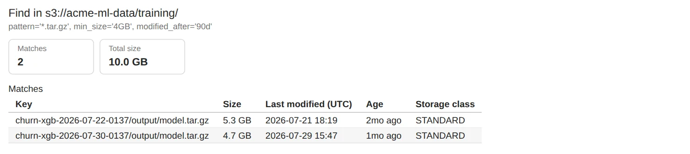
| Filter | Matches | Example |
|---|---|---|
pattern | Glob on the file name, or on the whole key if the pattern contains / | "*.csv", "raw/*/2025-*" |
regex | Regular expression searched in the whole key | r"/dt=2025-09-\d\d/" |
extensions | File types; "csv" also matches .csv.gz | ["parquet", "csv"] |
min_size, max_size | Size limits | "100MB", 5 * 1024**3 |
modified_after, modified_before | Last-modified time | "7d", "2025-01-01" |
storage_classes | Storage class | "GLACIER", ["STANDARD_IA", "ONEZONE_IA"] |
limit | Stop after this many matches (default 1000; None for all) | 50 |
Biggest, newest, oldest, and one object's details
ui.largest("s3://acme-ml-data/", 10)
ui.newest("s3://acme-ml-data/raw/", 5)
ui.oldest("s3://acme-ml-data/")
ui.head("s3://acme-ml-data/curated/features/churn/train.parquet") # every metadata field and tag
ui.link("s3://acme-ml-data/curated/features/churn/train.parquet", expires=900) # download link, valid 15 minWhat's in a folder
summary() reads the listing once and gives you a dashboard: totals, estimated monthly cost, a breakdown by folder, file type and storage class, how old and how big the files are, and the largest files. At the top are plain-language findings, such as too many small files, data waiting to be restored from Glacier, cold data you could store more cheaply, and tiny files billed at a minimum size.
ui.summary("s3://acme-ml-data/")
ui.summary("s3://acme-ml-data/raw/", folder_depth=2, top_n=20) # break down two folder levels, top 20 largest
ui.summary("s3://acme-ml-data/", limit=100_000) # stop after 100,000 keys (a quick sample)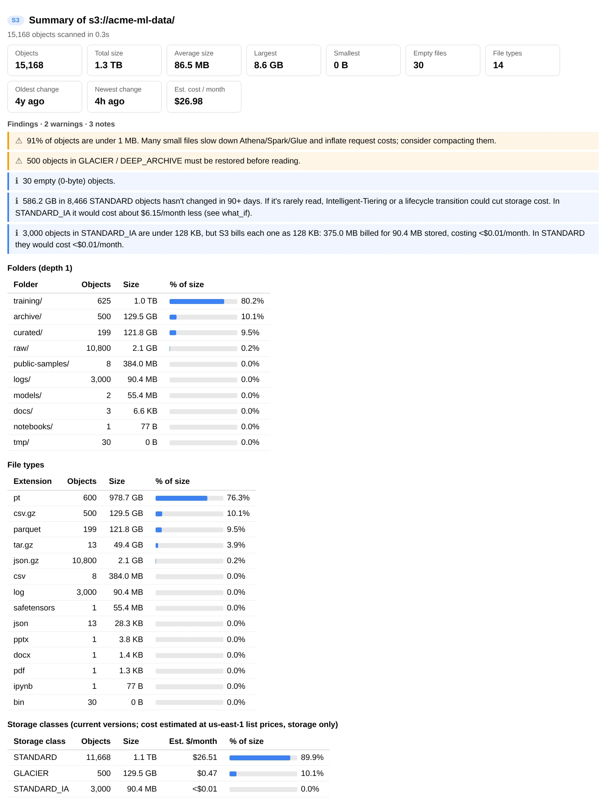
ui.summary("s3://acme-ml-data/"). Further down: size and age histograms and the largest objects.Look inside files
preview() shows what's in a file without downloading all of it: the first rows of a table and its schema, the files inside an archive, a model's tensors, a notebook's cells, and more. It picks the reader from the file name, or from the file's first bytes when there's no extension (Spark's part-00000, Firehose output) or the wrong one.
ui.preview("s3://acme-ml-data/curated/features/churn/train.parquet", n=8) # first 8 rows
ui.preview("s3://acme-ml-data/training/churn-xgb-2025-09-01-1030/output/model.tar.gz")
ui.preview("s3://acme-ml-data/models/tiny-llm/model.safetensors")
ui.preview("s3://acme-ml-data/notebooks/churn-data-checks.ipynb")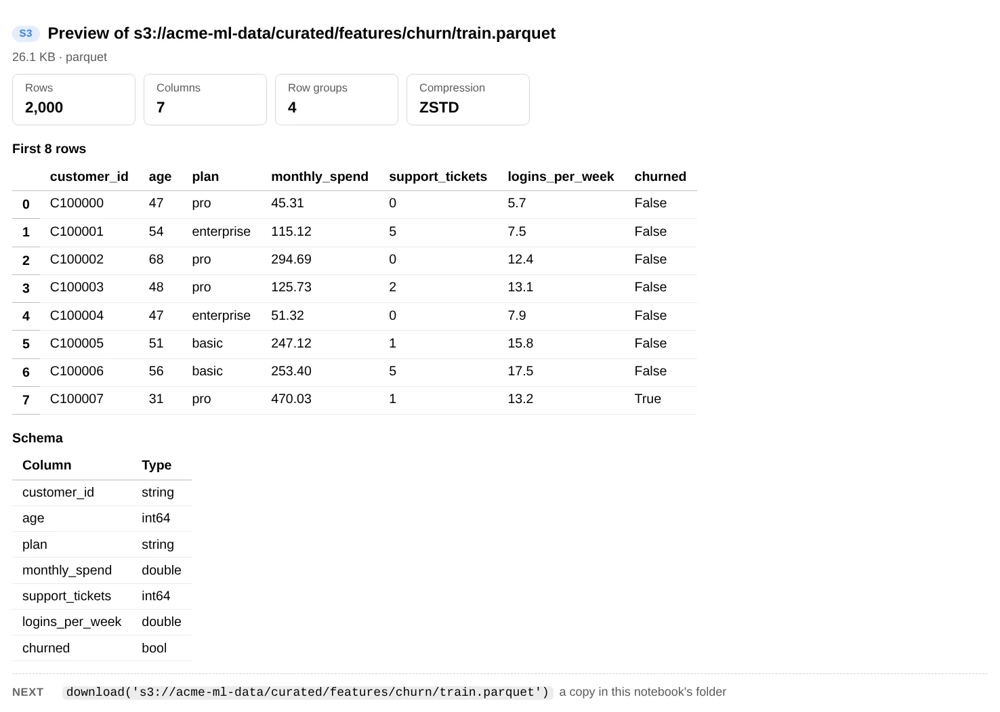
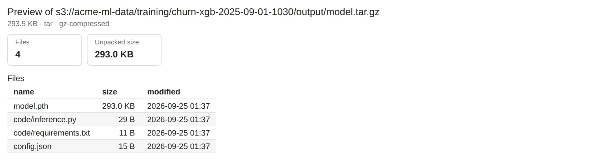
model.tar.gz, listed without extracting it.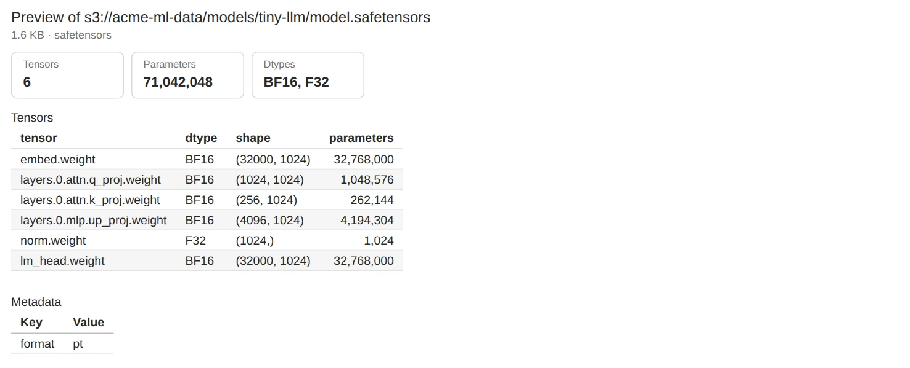
.safetensors model: only its header is read, so this is instant even for a multi-GB file.Supported file types
| Kind | Extensions | preview() shows | read_df() |
|---|---|---|---|
| Delimited text | .csv .tsv .psv | First rows | ✓ |
| JSON | .json .jsonl .ndjson | A table of records, or pretty JSON | ✓ |
| Columnar | .parquet .orc .feather .arrow | First rows, schema and row count; reads only what it needs | ✓ |
| Avro | .avro | First rows, schema and codec (built-in reader; snappy needs python-snappy) | ✓ |
| Excel | .xlsx .xlsm .xls | Sheet names and first rows (needs openpyxl; .xls needs xlrd) | ✓ sheet_name= |
| NumPy | .npy .npz | Shape, dtype and first rows, or the arrays inside | ✓ .npy, up to 2-D |
| Archives | .zip .tar .tar.gz .tgz | The files inside | |
| Models | .safetensors .pt .pth .ckpt .pkl .joblib | Tensors and parameter count, or the files in a checkpoint. Pickles are never loaded, because unpickling can run code | |
| Notebooks | .ipynb | Kernel and a list of cells | |
| Images, audio, video | .png .jpg .gif .webp, .wav .mp3 .flac, .mp4 .webm .mov | The image, or a player | |
.pdf | Page count, title and the first page's text (needs pypdf; without it, a link). Full text with ui.document() | ||
| Word | .docx .docm .dotx | First paragraphs, outline of headings, first table, word count (no package needed) | |
| PowerPoint | .pptx .pptm .ppsx | Every slide's title and text, and which have speaker notes (no package needed) | |
| Old Office | .doc .ppt .msg | Recognised, with how to convert them to .docx / .pptx (their binary format can't be read here) | |
| Text | .txt .log .md .yaml .xml .sql .py and more | First lines |
Any of them can also be compressed: .gz, .bz2, .xz, or .zst (Python 3.14+, or pip install zstandard). Anything else is shown as text or a hex dump.
Load files into Python
ui.core is the analyzer behind the view. Its readers return data instead of printing it.
s3 = ui.core
df = s3.read_df("s3://acme-ml-data/curated/features/churn/train.parquet")
df = s3.read_df("s3://acme-ml-data/curated/features/churn/train.parquet", nrows=1000, columns=["age", "plan"])
df = s3.read_df("s3://acme-ml-data/raw/events/dt=2025-09-01/part-00000.json.gz", fmt="jsonl", nrows=500) # one record per line
df = s3.read_df("s3://acme-ml-data/reports/q3.xlsx", sheet_name="Summary") # Excel: needs openpyxl
df = s3.read_df("s3://acme-ml-data/spark-output/part-00000", fmt="parquet") # no extension: say what it is
df = s3.read_df("s3://acme-ml-data/exports/data.txt", fmt="csv", sep=";") # extra options go to pandass3.read_lines("s3://acme-ml-data/logs/app/2025/09/01/app-00001.log", 50) # first 50 lines
s3.read_json("s3://acme-ml-data/config/settings.json")
s3.read_jsonl("s3://acme-ml-data/raw/events/dt=2025-09-01/part-00000.json.gz", n=100)
s3.read_avro("s3://acme-ml-data/kafka/events.avro", n=100) # a list of dicts
s3.read_npy("s3://acme-ml-data/embeddings/vectors.npy", nrows=10) # a NumPy array
s3.parquet_info("s3://acme-ml-data/curated/features/churn/train.parquet") # rows, row groups, schema
s3.list_archive("s3://acme-ml-data/training/churn-xgb-2025-09-01-1030/output/model.tar.gz").entries
s3.safetensors_info("s3://acme-ml-data/models/tiny-llm/model.safetensors")["tensors"]
with s3.open("s3://acme-ml-data/raw/events/dt=2025-09-01/part-00000.json.gz") as f: # a stream, decompressed
first_line = f.readline()
s3.download("s3://acme-ml-data/training/churn-xgb-2025-09-01-1030/output/model.tar.gz", "/tmp/")For worked examples that load a JSON export, a CSV, an Excel workbook or a whole folder and build on it, see Build your own analysis.
Read PDFs, Word and PowerPoint files
preview() gives a quick look; ui.document() shows the full text, page by page or slide by slide. Word and PowerPoint files are read with Python's standard library. PDFs need pypdf (%pip install pypdf).
ui.preview("s3://acme-ml-data/docs/model-card-churn-xgb.docx") # outline, first paragraphs, first table
ui.preview("s3://acme-ml-data/docs/q3-ml-platform-review.pptx") # every slide's title and text
ui.document("s3://acme-ml-data/docs/data-retention-policy.pdf") # full text, page by page
ui.document("s3://acme-ml-data/docs/data-retention-policy.pdf", pages=[2]) # just page 2
ui.document("s3://acme-ml-data/docs/q3-ml-platform-review.pptx", pages=[2, 3]) # slides 2-3, with speaker notes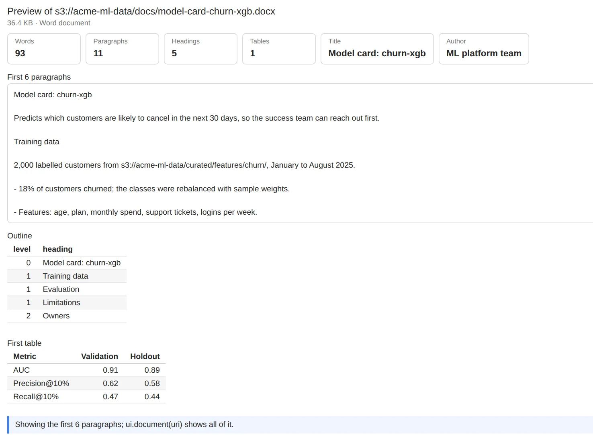
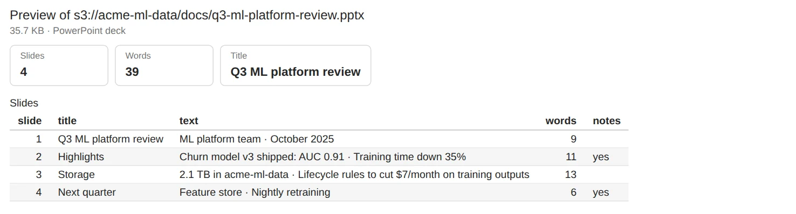
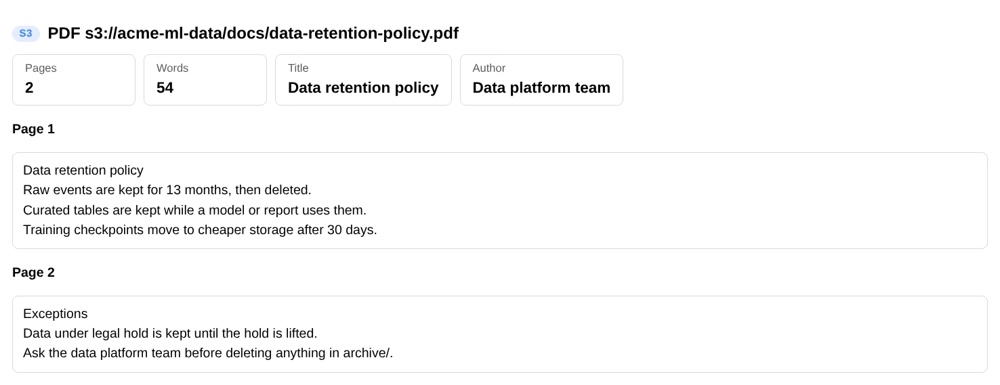
ui.document(...) on a two-page PDF.To use the text in Python (for search, summaries, or checking what a knowledge base will ingest), read_document() returns a Document:
doc = ui.core.read_document("s3://acme-ml-data/docs/data-retention-policy.pdf")
doc.text # everything, pages separated by blank lines
doc.parts # one string per page (PDF) or slide (PowerPoint); paragraphs and tables for Word
doc.numbers # the page / slide number of each part
doc.page_count, doc.word_count, doc.title, doc.author
deck = ui.core.read_pptx("s3://acme-ml-data/docs/q3-ml-platform-review.pptx")
deck.slide_titles, deck.notes # per slide
card = ui.core.read_docx("s3://acme-ml-data/docs/model-card-churn-xgb.docx")
card.headings, card.tables # [(level, text)], tables as rows of cells
ui.core.read_pdf("s3://acme-ml-data/docs/data-retention-policy.pdf", pages=range(1, 3))
texts = {obj.key: ui.core.read_document(obj.uri).text # every PDF under a folder
for obj in ui.core.find("s3://acme-ml-data/docs/", extensions="pdf")}Scanned PDFs are images with no text layer: their pages come back empty and the preview says so; reading them needs OCR (for example Amazon Textract). Password-protected PDFs: pass password="...". Old .doc / .ppt files use a binary format this tool can't read; save them as .docx / .pptx, or convert them with LibreOffice: soffice --headless --convert-to docx FILE.doc.
Cut storage costs
Costs appear throughout: summary() prices the files in a folder, bucket_info() and overview() price whole buckets (old versions included), and versions() and uploads() price the storage you can't see in a normal listing. They're estimates of storage only, at us-east-1 list prices, and follow S3's billing rules: STANDARD_IA, ONEZONE_IA and GLACIER_IR bill at least 128 KB per file, and GLACIER and DEEP_ARCHIVE add 40 KB of index data per file.
Preview a lifecycle rule before you add it
what_if() shows what a lifecycle rule would do if it ran today: how many files it would move or delete, the monthly cost before and after, the one-time cost (transition requests, and early-deletion charges for files that haven't reached their storage class's minimum duration), and how soon it pays for itself. It follows S3's own rules, for example that files under 128 KB aren't moved. It also prints the rule, ready to add.
ui.what_if("s3://acme-ml-data/training/", move_after={30: "STANDARD_IA", 180: "GLACIER"})
ui.what_if("s3://acme-ml-data/logs/", move_after=30, to="STANDARD_IA")
ui.what_if("s3://acme-ml-data/tmp/", delete_after=7)
ui.what_if("s3://acme-ml-data/raw/", move_after=0, to="INTELLIGENT_TIERING")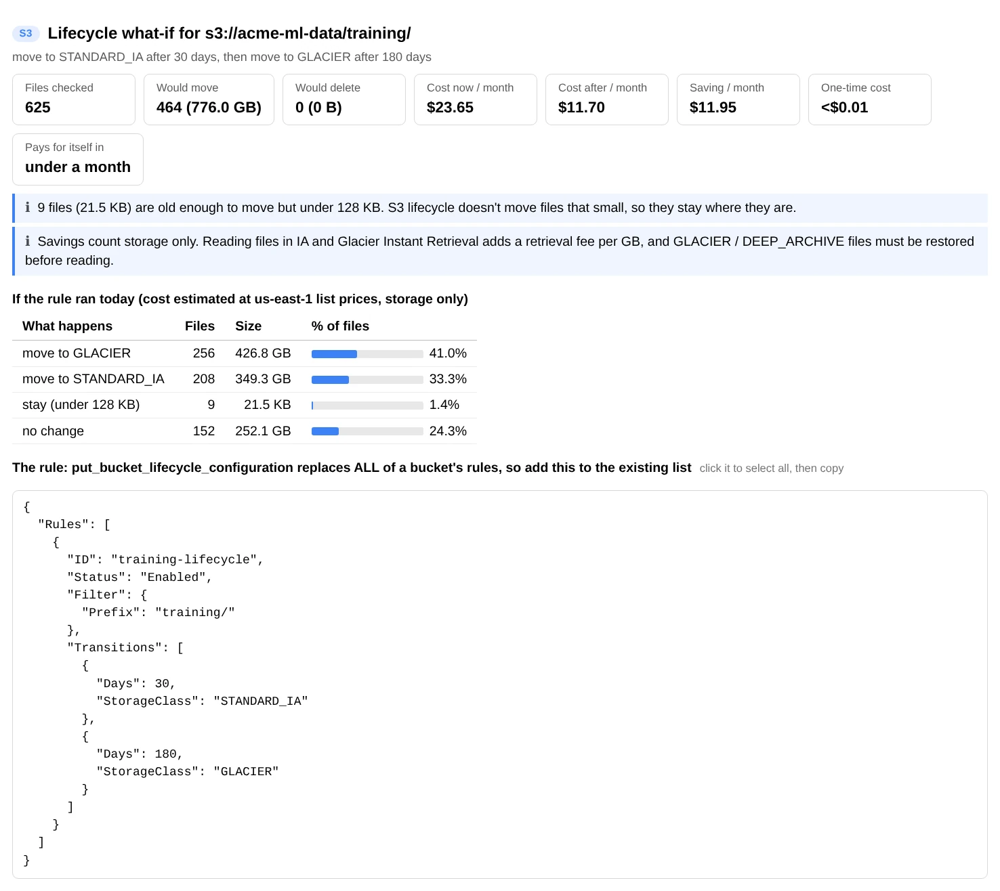
To add the rule yourself (the tool never changes your buckets):
import boto3
impact = ui.core.simulate_lifecycle("s3://acme-ml-data/training/", move_after={30: "STANDARD_IA", 180: "GLACIER"})
print(f"saves ${impact.monthly_savings:,.2f} a month")
client = boto3.client("s3")
current = client.get_bucket_lifecycle_configuration(Bucket="acme-ml-data")["Rules"]
# put_bucket_lifecycle_configuration replaces every rule, so send the existing ones too
client.put_bucket_lifecycle_configuration(Bucket="acme-ml-data",
LifecycleConfiguration={"Rules": current + [impact.rule()]})If the bucket has no lifecycle rules yet, get_bucket_lifecycle_configuration raises an error; use an empty list for current instead.
Hidden storage: old versions, unfinished uploads, duplicates
ui.versions("s3://acme-ml-data/") # noncurrent versions and what they cost
ui.uploads("s3://acme-ml-data/") # unfinished multipart uploads: billed but invisible
ui.duplicates("s3://acme-ml-data/public-samples/") # identical files and the space you'd get back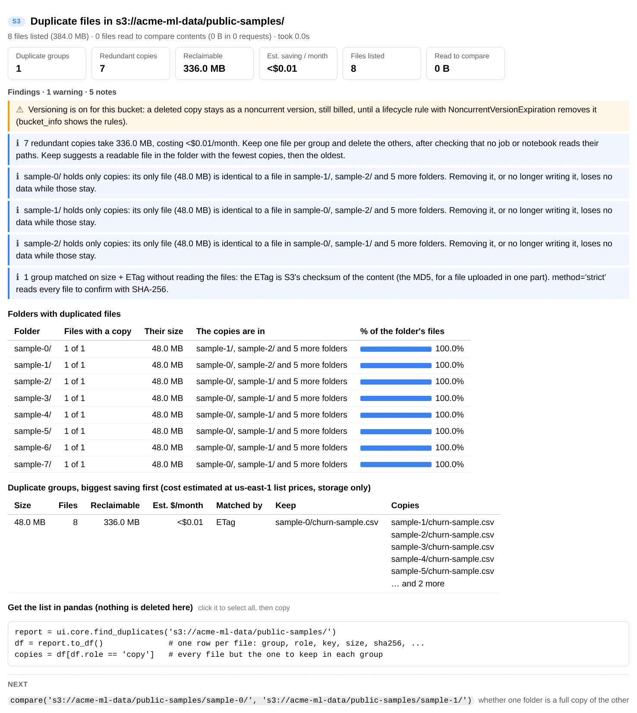
ui.duplicates(...) matches files by size and ETag.Use your region's prices
The default prices are us-east-1 list prices for the first 50 TB, in USD per GB-month. Pass your own from the S3 pricing page; any class you leave out keeps its default.
from s3 import S3Analyzer, S3View
ui = S3View(S3Analyzer(prices={"STANDARD": 0.025, "STANDARD_IA": 0.0138}))Recover deleted files
In a versioned bucket, deleting a file only adds a delete marker; the data is still there. deleted() lists those files, most recent first, with the size you'd get back and the code that restores one.
ui.deleted("s3://acme-ml-data/")
ui.deleted("s3://acme-ml-data/curated/", deleted_after="7d") # only files deleted in the last week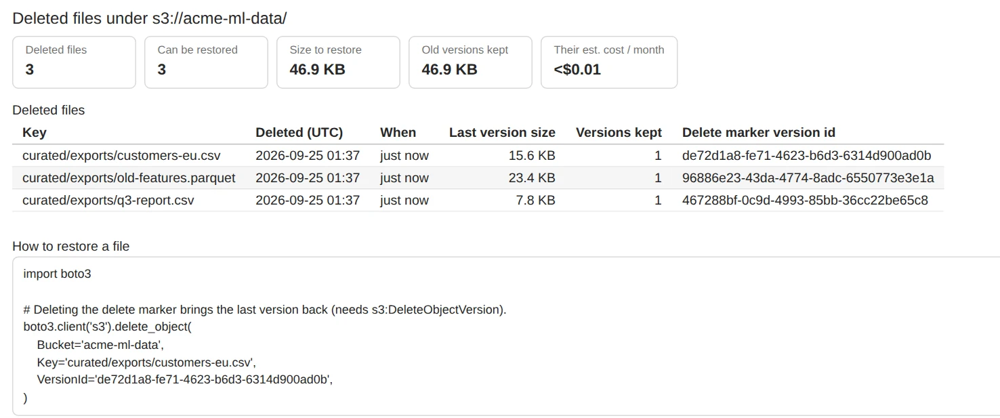
ui.deleted("s3://acme-ml-data/")Restoring means deleting the delete marker, which needs s3:DeleteObjectVersion. To bring back everything deleted under a folder in the last day:
import boto3
client = boto3.client("s3")
for f in ui.core.deleted_files("s3://acme-ml-data/curated/exports/", deleted_after="1d").files:
if f.restorable:
client.delete_object(Bucket="acme-ml-data", Key=f.key, VersionId=f.marker_version_id)For one file's full history, use ui.history("s3://acme-ml-data/curated/exports/q3-report.csv"). If versioning is off, deleted() says so: deleted files are gone for good in that case.
Check a copy or sync
compare() matches two prefixes by relative key, size and ETag, so you can check that a copy, sync or migration is complete.
ui.compare("s3://acme-ml-data/curated/", "s3://acme-eu-exports/curated/")
result = ui.core.compare("s3://acme-ml-data/curated/", "s3://acme-eu-exports/curated/")
result.in_sync, len(result.only_in_a), len(result.different)Files encrypted with SSE-KMS, or uploaded with different multipart settings, have different ETags even when their content is identical. Pairs with the same size but multipart ETags are counted separately, as “ETag not comparable”.
Use the data in Python
Every report has a data version on ui.core (an S3Analyzer) that returns dataclasses, lists and DataFrames instead of printing. Use it to build your own checks, charts or scheduled jobs.
from s3 import explain_policy, objects_to_df
s3 = ui.core
summary = s3.summarize("s3://acme-ml-data/") # PrefixSummary
summary.total_size, summary.monthly_cost # bytes, USD per month
summary.by_extension["parquet"].size # bytes of parquet
{cls: stat.size for cls, stat in summary.by_storage_class.items()}
old_checkpoints = s3.find("s3://acme-ml-data/training/", extensions="pt", modified_before="180d")
df = objects_to_df(old_checkpoints) # key, size, last_modified, storage_class, extension, etag, uri
df.groupby("storage_class")["size"].sum()
for obj in s3.iter_objects("s3://acme-ml-data/raw/", limit=5000): # stream a listing
pass
cfg = s3.bucket_config("acme-ml-data") # BucketConfig
cfg.versioning, cfg.encryption, cfg.lifecycle_rules
reports = s3.bucket_reports(match="acme-*") # config + CloudWatch size for many buckets
for st in explain_policy(s3.bucket_policy("acme-ml-data"), s3.account_id()):
print(st.effect, st.who, st.actions, st.resources, st.conditions)The analysis functions don't call AWS, so they also work on your own lists of files, for example rows from an S3 Inventory report:
from datetime import datetime, timezone
from s3 import ObjectInfo, simulate_lifecycle_objects, summarize_objects
rows = [ObjectInfo("acme-ml-data", "raw/a.json", 1_200_000, datetime(2025, 1, 5, tzinfo=timezone.utc)),
ObjectInfo("acme-ml-data", "raw/b.json", 800_000, datetime(2025, 6, 1, tzinfo=timezone.utc), "STANDARD_IA")]
summarize_objects(rows, "s3://acme-ml-data/raw/").monthly_cost
simulate_lifecycle_objects(rows, "s3://acme-ml-data/raw/", move_after=30, to="GLACIER_IR").monthly_savingsAlso pure: build_folder_tree, make_filter, find_duplicate_groups, compare_objects, summary_findings, bucket_findings, policy_findings, object_monthly_cost, cloudwatch_cost, parse_avro and sniff_format.
Build your own analysis
The commands above answer common questions. For your own, the pattern is always the same: take a file's S3 path, load it into Python with ui.core, and from there it's ordinary Python and pandas. The loaders deal with the S3 side: compression, file formats, reading only the rows you ask for, and streaming files too big for memory.
1. Find the file
A path you already know, or one from find() or ls(). Look at it first with ui.preview(path).
2. Load it
read_df() for tables, read_json() for JSON documents, open() to stream.
3. Build on it
Clean, join, aggregate, check, chart. Put it in a function to run it again on tomorrow's file.
| You have | Load it with | You get |
|---|---|---|
| A JSON document: a config, an API response, an export | s3.read_json(path) | Dicts and lists, as json.load returns them |
JSON records, one per line (.jsonl, Firehose, Spark) | s3.read_df(path), plus fmt="jsonl" if the name ends in .json | A DataFrame; nested fields become a.b columns |
| CSV, TSV or other delimited text | s3.read_df(path) | A DataFrame; extra options go to pandas.read_csv |
| An Excel workbook | s3.read_df(path, sheet_name=...) | A DataFrame, or every sheet with sheet_name=None |
| A folder of files | s3.find(...), then read_df each | One DataFrame, with pd.concat |
| A file too big for memory | s3.open(path) | A stream, already decompressed, to read in chunks |
| A library that needs a file on disk | s3.download(path, "/tmp/") | The local path |
Start from a path
import pandas as pd
from s3 import S3View
ui = S3View()
s3 = ui.core # the analyzer behind the view: returns data instead of printing
path = "s3://acme-ml-data/raw/api/orders/2025-09-01.json" # "acme-ml-data/raw/..." works too
s3.exists(path) # True or False
ui.preview(path) # look before you load: first records, columns, sizeIn a script or a scheduled job there's no view: create the analyzer directly with s3 = S3Analyzer(), or S3Analyzer(profile="dev", region="eu-west-1"). Everything below works the same. The loaders read from S3; for a file that's already on the notebook's disk, load it with pandas (pd.read_csv("sales.csv")) and the rest of your code doesn't change.
A JSON file
read_json() parses a whole JSON document into dicts and lists. Exports usually wrap the records you want in an outer object, like this orders/2025-09-01.json:
{
"exported_at": "2025-09-02T01:00:00Z",
"orders": [
{"id": "o-1001", "placed_at": "2025-09-01T08:14:00Z", "customer": {"id": "c-17", "country": "DE"},
"items": [{"sku": "A-1", "qty": 2, "price": 9.5}, {"sku": "B-7", "qty": 1, "price": 30.0}]},
{"id": "o-1002", "placed_at": "2025-09-01T08:20:00Z", "customer": {"id": "c-42", "country": "FR"},
"items": [{"sku": "A-1", "qty": 5, "price": 9.5}]}
]
}Take the records out and flatten them into a table with pd.json_normalize:
data = s3.read_json("s3://acme-ml-data/raw/api/orders/2025-09-01.json")
data["exported_at"], len(data["orders"])
orders = pd.json_normalize(data["orders"]) # one row per order: id, placed_at, customer.id, customer.country, items
items = pd.json_normalize(data["orders"], record_path="items", # one row per line item,
meta=["id", ["customer", "country"]]) # with its order's id and country
items["revenue"] = items["qty"] * items["price"]
items.groupby("customer.country")["revenue"].sum().sort_values(ascending=False)A file with one JSON record per line loads straight into a DataFrame. Firehose and Spark often name those files .json; add fmt="jsonl" so they're read line by line:
events = s3.read_df("s3://acme-ml-data/raw/events/dt=2025-09-01/part-00000.json.gz", fmt="jsonl")
events = s3.read_df("s3://acme-ml-data/raw/events/dt=2025-09-01/part-00000.json.gz", fmt="jsonl", nrows=1000) # first 1,000
events["user.plan"].value_counts() # nested fields are flattened: {"user": {"plan": ...}} is "user.plan"A CSV file
read_df() picks the reader from the file name, and passes any extra options on to pandas.read_csv. Peek at the first rows, load the file with the types you want, then work on it as usual:
path = "s3://acme-ml-data/raw/sales/dt=2025-09-01/sales.csv"
s3.read_df(path, nrows=5) # a peek: reads only the start of the file
sales = s3.read_df(path, parse_dates=["placed_at"], dtype={"sku": "string"})
sales["revenue"] = sales["qty"] * sales["unit_price"]
sales.groupby("store")["revenue"].agg(["count", "sum", "mean"]) # orders and revenue per store
sales.set_index("placed_at").resample("h")["revenue"].sum() # revenue per hour
sales[(sales["qty"] <= 0) | sales["unit_price"].isna()] # rows that need a lookFiles from other systems often need a few options: a different separator or decimal mark, an older encoding, or a title above the header. fmt="csv" tells it how to read a file whose name doesn't say.
stock = s3.read_df("s3://acme-ml-data/raw/partners/stock.txt", fmt="csv",
sep=";", decimal=",", encoding="latin-1", skiprows=2)read_df() loads the whole file into memory; columns=["store", "qty"] loads fewer columns. For a file that won't fit at all, stream it with open(), which decompresses as it goes, and let pandas read it in chunks:
parts = []
with s3.open("s3://acme-ml-data/archive/sales-2024.csv.gz") as f:
for chunk in pd.read_csv(f, chunksize=500_000, usecols=["store", "qty"]):
parts.append(chunk.groupby("store")["qty"].sum())
totals = pd.concat(parts).groupby(level=0).sum() # add up the per-chunk totalsAn Excel workbook
Excel needs openpyxl (%pip install openpyxl). Options such as sheet_name, header and skiprows go to pandas.read_excel.
path = "s3://acme-ml-data/reports/q3.xlsx"
ui.preview(path) # sheet names and the first rows
summary = s3.read_df(path, sheet_name="Summary", header=2) # the header is on row 3, under a title
sheets = s3.read_df(path, sheet_name=None) # every sheet: {"Summary": df, "Jul": df, "Aug": df, "Sep": df}
months = pd.concat([df.assign(month=name) for name, df in sheets.items() if name != "Summary"],
ignore_index=True) # sheets with the same columns, stacked into one table
months.pivot_table(index="region", columns="month", values="revenue", aggfunc="sum", sort=False)pandas reads cell values. For formulas, comments, merged cells or formatting, download the file and open it with openpyxl:
import openpyxl
wb = openpyxl.load_workbook(s3.download(path, "/tmp/"))
wb.sheetnames, wb["Summary"].merged_cells.rangesMany files: a folder or a date range
Use find() to pick the files (every filter works), then load each one and stack them. Each match has .uri, .key, .size and .last_modified.
files = s3.find("s3://acme-ml-data/raw/sales/", extensions="csv", modified_after="30d", limit=None)
# or by name: s3.find("s3://acme-ml-data/raw/sales/", regex=r"dt=2025-09-\d\d/")
sales = pd.concat([s3.read_df(f.uri).assign(source=f.key) for f in files], ignore_index=True)
sales["dt"] = sales["source"].str.extract(r"dt=([\d-]+)/", expand=False) # the date from the folder nameWith hundreds of small files, most of the time is spent waiting for S3. Load several at once:
from concurrent.futures import ThreadPoolExecutor
with ThreadPoolExecutor(max_workers=16) as pool:
frames = list(pool.map(lambda f: s3.read_df(f.uri).assign(source=f.key), files))
sales = pd.concat(frames, ignore_index=True)Turn it into your own tool
Once an analysis works, put it in functions that take the analyzer and a path. The same code then runs on any day's file, in any notebook, and in a script or scheduled job with S3Analyzer() in place of ui.core.
import pandas as pd
from s3 import S3Analyzer
def load_sales(s3: S3Analyzer, path: str) -> pd.DataFrame:
"""A sales export, with a revenue column."""
sales = s3.read_df(path, parse_dates=["placed_at"])
return sales.assign(revenue=sales["qty"] * sales["unit_price"])
def check_sales(sales: pd.DataFrame) -> list[str]:
"""Problems to fix before the data is used; an empty list means it looks fine."""
problems = []
if sales["order_id"].duplicated().any():
problems.append(f"{sales['order_id'].duplicated().sum()} duplicate order ids")
if (sales["qty"] <= 0).any():
problems.append(f"{(sales['qty'] <= 0).sum()} rows with a quantity of 0 or less")
empty = [c for c in sales.columns if sales[c].isna().any()]
if empty:
problems.append("missing values in " + ", ".join(empty))
return problems
s3 = ui.core # in a script or a job: s3 = S3Analyzer()
for f in s3.find("s3://acme-ml-data/raw/sales/", extensions="csv", modified_after="7d"):
print(f.key, check_sales(load_sales(s3, f.uri)) or "OK")
report = load_sales(s3, "s3://acme-ml-data/raw/sales/dt=2025-09-01/sales.csv").groupby("store")["revenue"].sum()
report.plot.bar() # a chart in the notebook
report.to_csv("revenue-by-store-2025-09-01.csv") # a file next to the notebookThe analyzer only reads. To save a result to S3, upload it with boto3, which needs s3:PutObject on the destination:
import boto3
boto3.client("s3").upload_file("revenue-by-store-2025-09-01.csv", "acme-ml-data",
"reports/daily/revenue-by-store-2025-09-01.csv")Very large buckets
Start with CloudWatch
bucket_info() and overview() read sizes from CloudWatch without listing anything, so they take seconds on any bucket.
Scans list every key
summary, tree, find, duplicates, compare and what_if list 1,000 keys per request: about 1 to 3 minutes per million objects. Progress is shown while they run.
Sample with limit=
Pass limit=100_000 to stop early, or point the scan at a smaller prefix.
ls is always fast
It lists a single level, however big the bucket is.
Permissions
Everything is read-only. Anything the notebook's role can't read shows up as a note (or a ? on a card) instead of an error, so you can start with less and add what you need. This policy covers every command:
{
"Version": "2012-10-17",
"Statement": [
{
"Sid": "ReadS3",
"Effect": "Allow",
"Action": [
"s3:ListAllMyBuckets", "s3:GetBucketLocation", "s3:ListBucket", "s3:ListBucketVersions",
"s3:ListBucketMultipartUploads", "s3:ListMultipartUploadParts", "s3:GetObject", "s3:GetObjectTagging",
"s3:GetBucketVersioning", "s3:GetEncryptionConfiguration", "s3:GetBucketPublicAccessBlock",
"s3:GetBucketPolicy", "s3:GetBucketPolicyStatus", "s3:GetBucketOwnershipControls",
"s3:GetBucketObjectLockConfiguration", "s3:GetLifecycleConfiguration", "s3:GetReplicationConfiguration",
"s3:GetBucketLogging", "s3:GetBucketTagging", "s3:GetInventoryConfiguration",
"s3:GetAccountPublicAccessBlock"
],
"Resource": "*"
},
{
"Sid": "ReadBucketSizes",
"Effect": "Allow",
"Action": ["cloudwatch:ListMetrics", "cloudwatch:GetMetricData"],
"Resource": "*"
}
]
}Files encrypted with SSE-KMS also need kms:Decrypt on their key to be previewed or read. To scope the policy down, replace "Resource": "*" in the first statement with your buckets' ARNs, for example arn:aws:s3:::acme-ml-data and arn:aws:s3:::acme-ml-data/*.
Troubleshooting
A card shows “?” or a note says “Couldn't read … (AccessDenied)”
The notebook's role is missing that permission. The rest of the report still works. Compare the role with the policy above.
“No CloudWatch storage metrics yet”
S3 publishes storage metrics once a day, so a new or empty bucket has none yet. summary() lists the files instead and always works.
Commands are slow or hang in a notebook with no internet access (VPC-only mode)
S3 usually works through a gateway endpoint, but CloudWatch (for sizes) and STS (for your account id) need their own VPC interface endpoints. Without them, the tool gives up on the account id after about 5 seconds and marks it unknown. Use ui.overview(metrics=False) or ui.bucket_info(name, metrics=False) to skip CloudWatch.
The report lost its formatting after I reopened the notebook
JupyterLab strips the report's styles from saved output when a notebook is reopened. Run the cell again to get the formatted report back.
A preview says a package is missing
Install it in the notebook's kernel, for example %pip install openpyxl for Excel, then run the cell again.
The costs don't match my bill
They're estimates of storage only, at us-east-1 list prices for the first 50 TB. They leave out requests, retrievals, data transfer, volume discounts and Intelligent-Tiering's monitoring fee. For other regions, pass your own prices. summary() prices current versions only; bucket_info() includes every version.
Command reference
Every S3View command. ui.help() prints the same list with the full signatures.
| Command | What it shows |
|---|---|
buckets() | All buckets with region, creation date and age |
overview(match=None, metrics=True) | Every bucket: objects, size, estimated cost, versioning, encryption, public access, lifecycle rules, warnings |
bucket_info(bucket, metrics=True) | One bucket's settings, policy, lifecycle rules, risks, and size and cost by storage type |
policy(bucket) | The bucket policy in plain English, its risks and the JSON |
ls(uri, limit=500) | One level of folders and files |
tree(uri, depth=2) | Folder tree with count, size and share at every level |
summary(uri, top_n=10, folder_depth=1, limit=None) | Dashboard for a prefix, with cost and findings |
find(uri, pattern=, regex=, extensions=, min_size=, max_size=, modified_after=, modified_before=, storage_classes=, limit=1000) | Search |
largest(uri, n=20) · newest · oldest | Top-N objects |
duplicates(uri, min_size=1) | Identical files and reclaimable space |
compare(uri_a, uri_b) | Identical, different, only in A, only in B |
versions(uri) | Current vs old versions, delete markers, what old versions cost |
deleted(uri, deleted_after=None) | Deleted files you can still restore |
history(uri) | Every version of one file |
uploads(uri) | Unfinished multipart uploads and their cost |
what_if(uri, move_after=, to=, delete_after=) | What a lifecycle rule would move, delete and save |
head(uri) | All of one object's metadata and tags |
preview(uri, n=20) | What's inside a file (see file types) |
document(uri, pages=None) | Full text of a PDF, Word or PowerPoint file, page by page or slide by slide |
link(uri, expires=3600) | A temporary download link |
help() | This list, with signatures |